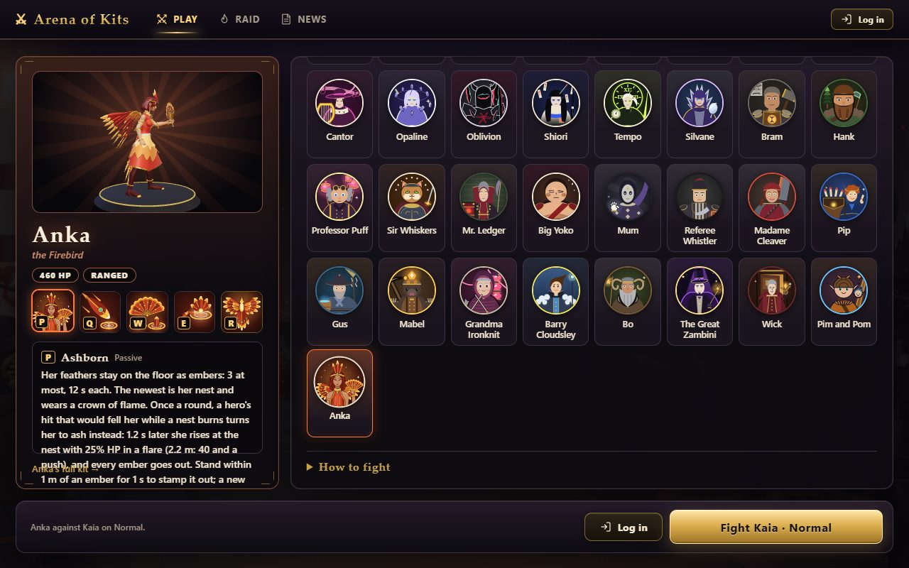
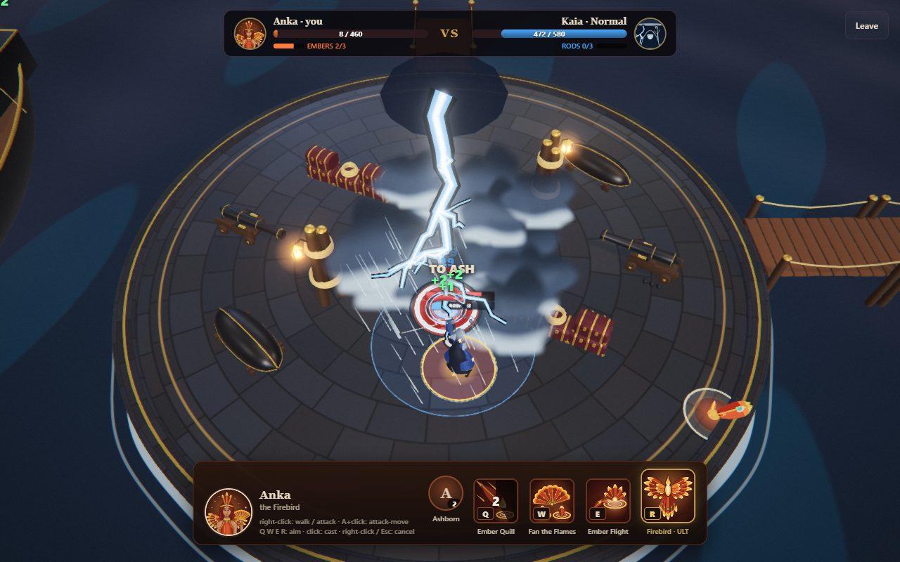
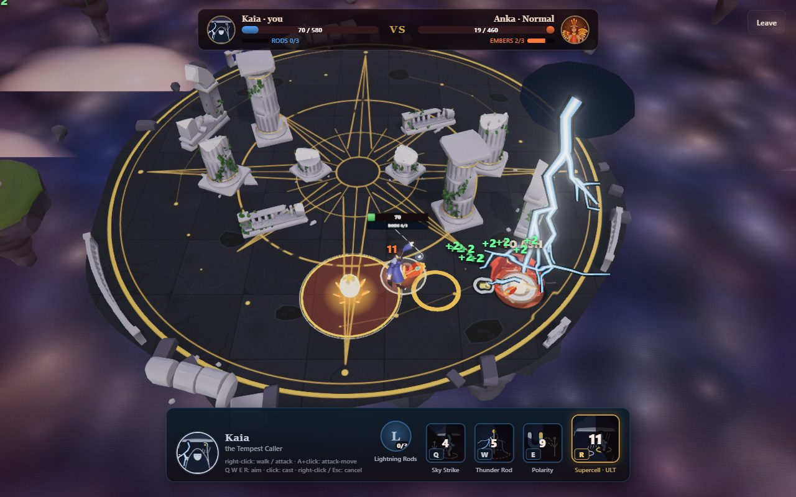
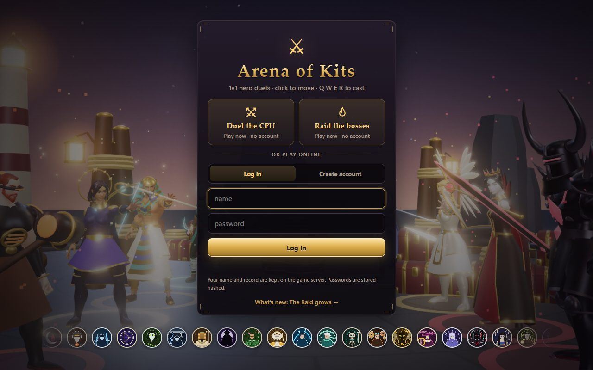
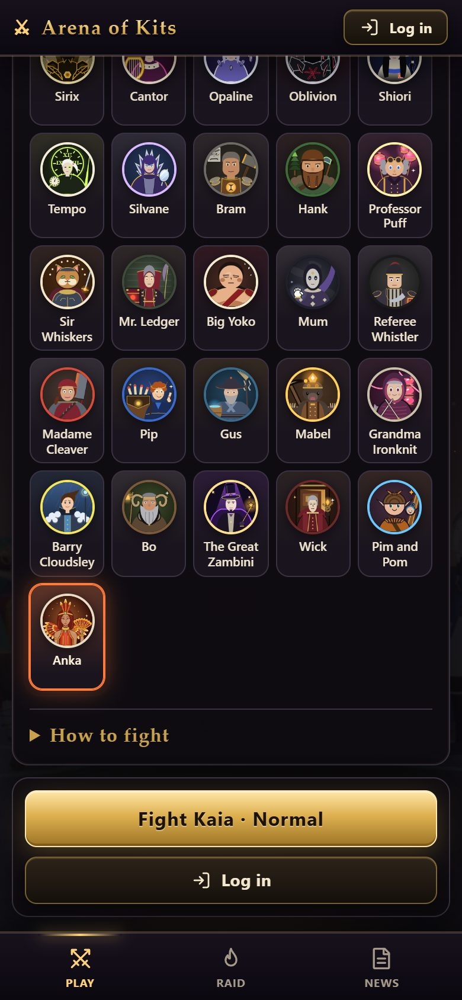
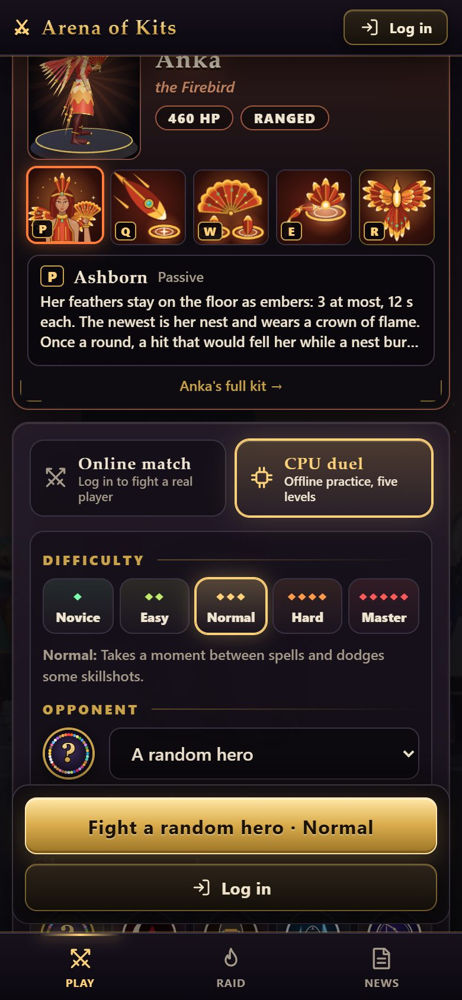
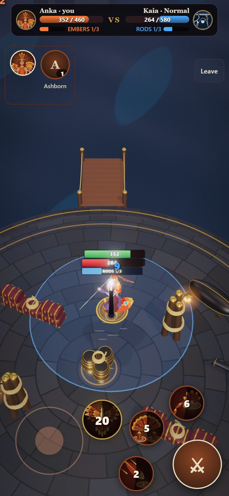
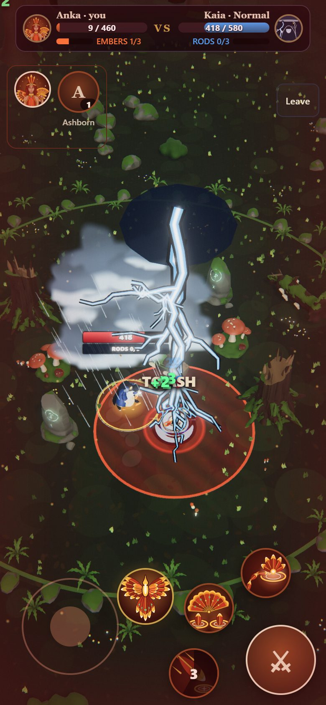
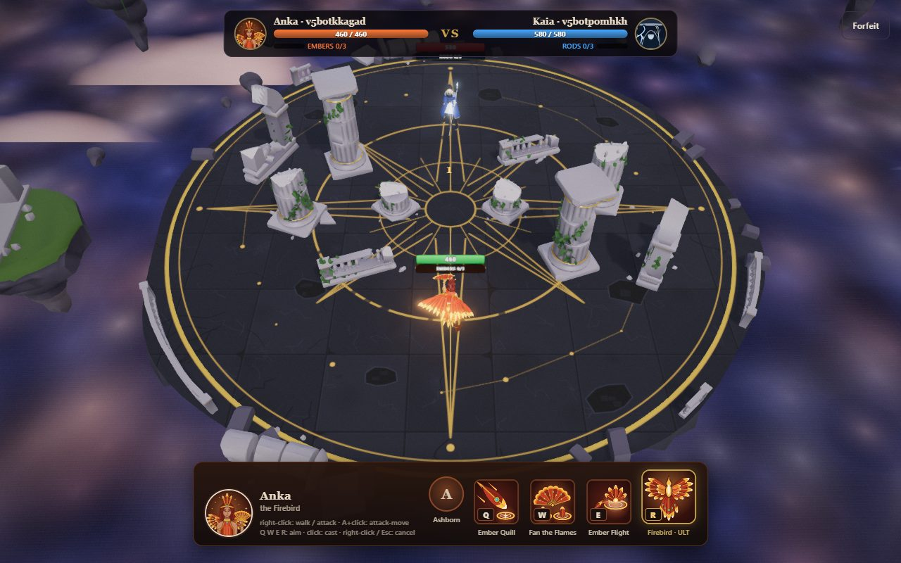
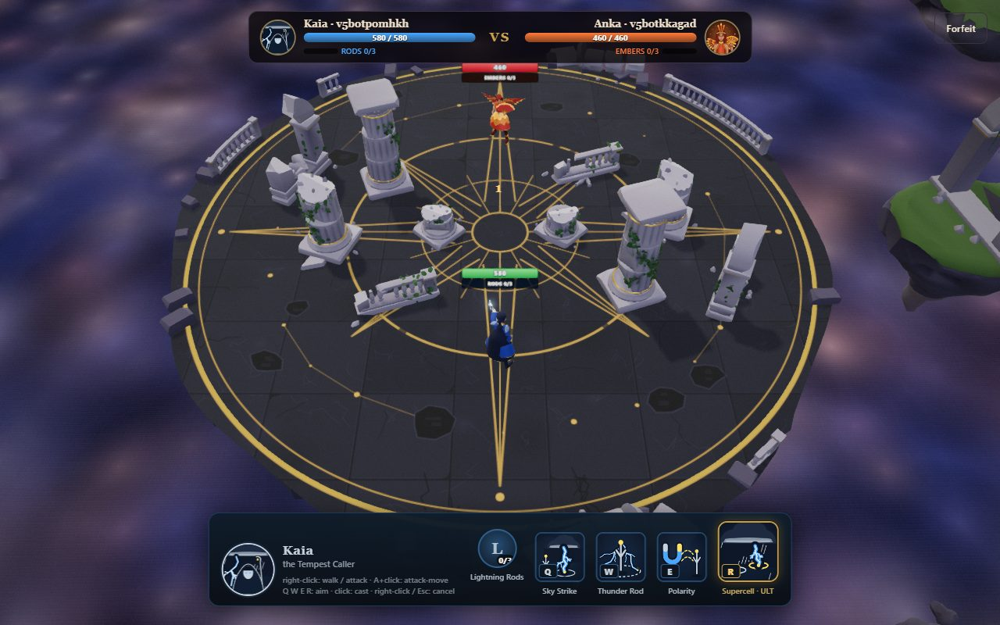

Anka, the Firebird: does she play?
Gate 5 of the rules for creating a hero, measured on 2026-11-11. Everything below was run by the computer; the one thing left is you playing her once.
Balance
Who she beats, of 32 fights each (the green band is the target, 40 to 60%):
| Against | Wins | |
|---|---|---|
| Isolde | 19 | |
| Sirix | 19 | |
| Cantor | 19 | |
| Brannoc | 17 | |
| Oblivion | 15 | |
| Kaia | 11 | |
| All six | 100 of 192 |
Five runs of 192 fights today gave 56, 52, 56, 54 and 52% (the last is the table above; one pairing swings by ten wins from run to run, Isolde from 12 to 19). She was 48% before today's balance pass made Sirix weaker (she won 6 of 32 against him then, 20 now). Her damage a second: Ember Quill 10.3, her attack 6.5, Firebird 4.2, Fan the Flames 3.8, Ember Flight 1.3, the flare of her rising 0.4: the computer uses every spell. The full pages: the run, with events.
On the game page
Picked in the hero grid through the game's own menus, fought, rematch, then as the computer's hero, at 1280x800 and on a phone screen with touch. No errors. She rose with 115 health on both.








The Raid
| 90 fights each (three runs of 30) | Anka | Vitriol | Kaia |
|---|---|---|---|
| The Sun Warden: clears | 72 | 78 | 76 |
| Seconds a fight | 140 | 125 | 129 |
| Damage a second | 27 | 31 | 29 |
| Ash and Ember (second boss): clears | 33 | 54 | 48 |
| Falls to Ash's Charge | 29 of 57 | 22 of 36 | 6 of 42 |
She clears the first boss about as the other fragile mages do (80% against 87 and 84; a run of 30 swings by five clears). Against the second she is weaker when the computer plays her: half her falls are Ash's Charge, the one blow no shield and no second life holds. Probably her flights take her out from behind the pillars; not looked into, and a person decides that for herself.
Her second life against a boss: an ordinary hit that would fell her turns her to ash and she rises at her nest with 115 health, as in a duel. A Charge kills her for good, nest or no nest, and in the egg. She has an ember on the floor about 70% of a fight, and the boss stamps out about one ember in twelve. With the upgrades Stubborn or Phoenix Heart her own life goes first and the upgrade is kept for the next blow. With Blood Pact (nothing heals) she rises with 1 health.
Online, two screens
Two bots through the real server, Anka against Kaia, each screen's view of her embers and her health read ten times a second and laid over the other's.
| Six matches on the finished code; in four of them Kaia keeps her distance and steps from side to side, as a person does | |
|---|---|
| Both screens show the same embers | 99% of 2,500 moments |
| The nest more than a metre apart on the two screens | 7 of 1,750 moments |
| She rose | 11 times, each on both screens at the same spot |
| Errors | none |


What these checks found, and what was fixed
- The two screens could disagree on her nest for 12 seconds. In the first online match the screens showed the same embers only 45% of the time. A feather lands at a slightly different moment on the two screens, and her embers were ranked "newest" by which landed first: thrown during Firebird's wind-up or just after her fan, a feather landed before the other spell's moment on one screen and after it on the other. Her health agreed all the while. Now an ember belongs to the cast that laid it, and both screens count her casts alike: the nest is the ember of her latest cast, and the fan burns the embers of earlier casts, whichever landed first.
- A feather the enemy sidestepped planted her nest in two places. A feather flies on both screens, each against the enemy where that screen shows it, and only the enemy's own screen decides the hit. So a feather that hit on one screen flew on to its full reach on the other: with a Kaia who sidesteps, the nest was more than a metre apart a tenth of the time, by up to 7 m, and the egg of her rising was shown where she did not rise. Now the screen that decides tells the other how far the feather really got, and the ember moves there a tenth of a second later.
- A hit that felled her only after rounding gave her no second life. The game takes 55.6 damage as 56; her rule looked at 55.6 against 56 health, did nothing, and she fell with a nest burning. By the arithmetic about one killing blow in fifty; shown on the old code and gone on the new.
- Her passive said "a hero's hit". A boss's hit starts her second life too, so it now says "a hit".
All four are in her own files (her rules and three of her spells); no engine file was touched, and in a duel against the computer nothing changed.
Seen, not changed
- While she is ash her health climbs in small steps, and a row of small green "+2" runs from where she fell to the nest.
- On the Play screen at laptop height her passive's text runs past its box (Vitriol's does too): the card holds about six lines.
- A damage number shows for one frame in the screen's top left corner before it jumps to its place. Every hero's, not hers.
- The Raid for two was not played with her.
What is left
- You play her once:
npm run dev, then http://localhost:5173/game, CPU duel, the last tile. - The server's protocol number: the raid change that ships in the same release raises it, and that covers her.
- Push, then deploy: each on your word.